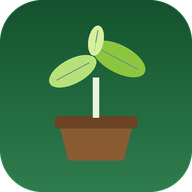

Masih memuat. Bila terlalu lama, periksa sinyal atau ketuk Muat ulang.
Nursery App memerlukan internet untuk mengambil data terbaru. Aplikasi akan terbuka otomatis saat koneksi kembali.
Buka file index.html di repository ini, cari baris APP_URL, lalu ganti dengan URL Web App Apps Script Anda yang berakhiran /exec.